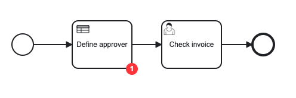
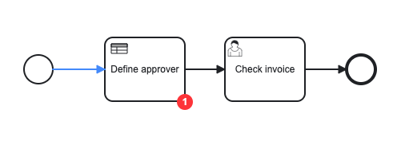

Tutorial
In this tutorial, we'll step through examples to highlight the capabilities of the Operate API, such as rendering a BPMN diagram.
Getting started
- You need authentication to access the API endpoints. Find more information here.
- We will use the
bpmn-jslibrary to render the diagram and add overlays. Visit the documentation on embedding the pre-packaged viewer for more details.
Set up the demo project
- Create a new folder using the following command:
mkdir operate-api-demo
cd operate-api-demo
- Initialize the project using the following command:
npm init --y
- Add a proxy server to bypass CORS errors. Create a
server.jsfile inside the project folder with the following contents:
const http = require("http");
const request = require("request");
const server = http.createServer((req, res) => {
request.get(
{
// Replace http://localhost:8080 with your Operate API url if its running on different port.
url: `http://localhost:8080${req.url}`,
headers: {
// Replace COOKIE_VALUE with your OPERATE-SESSION cookie value.
Cookie: "OPERATE-SESSION=COOKIE_VALUE",
},
},
(error, response, body) => {
if (error) {
console.error(error);
res.statusCode = 500;
res.setHeader("Access-Control-Allow-Origin", "*");
res.setHeader("Content-Type", "application/json");
res.end("Error: Could not get data from API");
} else {
res.setHeader("Content-Type", response.headers["content-type"]);
res.setHeader("Access-Control-Allow-Origin", "*");
res.end(body);
}
}
);
});
server.listen(3030, () => {
console.log("Proxy server listening on port 3030");
});
- Install the necessary packages using the following command:
npm install request
- Run the server using the following command:
node server.js
Render a BPMN diagram
- Create an
index.htmlfile and include thebpmn-jsscript:
<!doctype html>
<html>
<head>
<script src="https://unpkg.com/bpmn-js/dist/bpmn-viewer.development.js"></script>
</head>
<body></body>
</html>
- Create a
styles.cssfile to maintain the styling:
html,
body,
#canvas {
height: 100%;
padding: 0;
margin: 0;
}
.flow-node-incident {
width: 20px;
height: 20px;
display: flex;
justify-content: center;
align-items: center;
background-color: #ff3d3d;
color: White;
border-radius: 10px;
font-family: Arial;
font-size: 12px;
font-weight: bold;
transform: translateX(-50%);
}
- Create an
api.jsscript file and write a function that fetches the process XML by definition:
async function fetchDiagram() {
return fetch(
// Replace {PROCESS_DEFINITION_ID} with a process definition id.
// http://localhost:3030 is the URL of the Proxy server, which should stay the same.
"http://localhost:3030/v1/process-definitions/{PROCESS_DEFINITION_ID}/xml",
{
method: "GET",
}
).then((response) => response.text());
}
- Fetch and render the diagram:
<!doctype html>
<html>
<head>
<!-- replace CDN url with local bpmn-js path -->
<script src="https://unpkg.com/bpmn-js/dist/bpmn-viewer.development.js"></script>
<link rel="stylesheet" href="./styles.css" />
</head>
<body>
<!-- BPMN diagram container -->
<div id="canvas"></div>
<!-- JS file that includes our API methods -->
<script src="./api.js"></script>
<script>
// BpmnJS is the BPMN viewer instance
const viewer = new BpmnJS({ container: "#canvas" });
async function renderDiagram() {
const diagram = await fetchDiagram();
try {
await viewer.importXML(diagram);
const canvas = viewer.get("canvas");
canvas.zoom("fit-viewport");
} catch (err) {
console.log("err", err);
}
}
renderDiagram();
</script>
</body>
</html>
-
Open
index.htmlin your browser to observe the rendered diagram.![render diagram]()
Show statistics on the diagram
- Add a new function to the
api.jsfile that fetches the flow node statistics for a specified process instance id:
async function fetchStatistics() {
return fetch(
// Replace {PROCESS_INSTANCE_ID} with a process instance id.
// http://localhost:3030 is the URL of the proxy server, which should stay the same.
"http://localhost:3030/v1/process-instances/{PROCESS_INSTANCE_ID}/statistics",
{
method: "GET",
}
).then((response) => response.json());
}
- Add an overlay that displays the number of incidents on flow nodes:
// ...
canvas.zoom("fit-viewport"); // insert following code below this line
const overlays = viewer.get("overlays");
fetchStatistics()
.then((statistics) =>
statistics.forEach(({ activityId, incidents }) => {
if (incidents > 0) {
overlays.add(activityId, "flowNodeState", {
position: {
bottom: 9,
right: 0,
},
html: `<div class="flow-node-incident">${incidents}</div>`,
});
}
})
)
.catch((err) => {
console.error("An error occured when fetching statistics: ", err);
});
// ...
- Open
index.htmlin your browser to observe the incident overlay displayed on the related flow node(s), if there are any.

Highlight processed sequence flows on the diagram
- Add a new function to the
api.jsfile that fetches the processed sequence flows for a specified process instance id:
async function fetchSequenceFlows() {
return fetch(
// Replace {PROCESS_INSTANCE_ID} with a process instance id.
// http://localhost:3030 is the URL of the Proxy server, which should stay the same.
"http://localhost:3030/v1/process-instances/{PROCESS_INSTANCE_ID}/sequence-flows",
{
method: "GET",
}
).then((response) => response.json());
}
- Color the processed sequence flows:
// ...
const overlays = viewer.get("overlays"); // insert following code below this line
fetchSequenceFlows()
.then((sequenceFlows) => {
sequenceFlows.forEach((sequenceFlow) => {
const elementRegistry = viewer.get("elementRegistry");
const graphicsFactory = viewer.get("graphicsFactory");
const element = elementRegistry?.get(sequenceFlow);
if (element?.di !== undefined) {
element.di.set("stroke", "#4d90ff");
const gfx = elementRegistry?.getGraphics(element);
if (gfx !== undefined) {
graphicsFactory?.update("connection", element, gfx);
}
}
});
})
.catch((err) => {
console.error("An error occured when fetching sequence flows: ", err);
});
// ...
- Open
index.htmlin your browser to observe the processed sequence flows highlighted.

Full demo
For additional details, visit the GitHub full working demo.